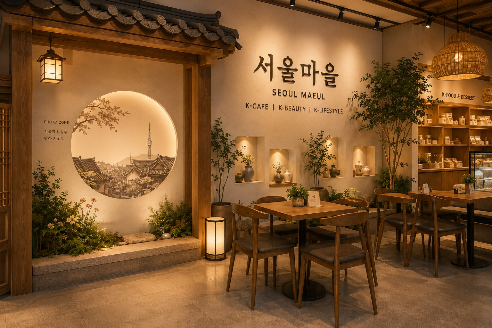

发现
发现全新的韩国产品与品牌。

首尔村
承载今日首尔的风貌，
融入印度全新的日常。
首尔村介绍
首尔村是一个将 K-美妆、K-美食、K-咖啡、K-生活方式汇聚于同一空间的全球生活方式平台，把韩国的感性与生活方式与印度的日常生活相连接。
不止于单纯的销售空间，我们希望在同一空间内完成挑选韩国产品的体验，以及停留、享受时光的过程。

全新的首尔体验
相较于原样复制传统的韩国元素，我们更希望将当下首尔精致的感性与温暖的生活文化，在当地空间中重新构建。


01 / K-美妆
护肤与美妆技术、产品使用感与品牌故事都汇聚于同一空间。这里将成为未来 JH SEOUL 开发的产品与精选韩国品牌共同亮相的核心区域。

02 / K-美食
我们介绍拉面、方便食品、零食与食材等在日常生活中容易接触到的韩国饮食文化。相比单纯陈列，我们更专注于易于挑选、愉悦体验的空间构成。
03 / K-咖啡
通过饮品、甜点与舒适的休憩空间，让顾客自然而然地体验韩国的咖啡文化。这里也是连接首尔村整体氛围的核心空间。

04 / K-生活方式
从生活用品、设计产品，到美容仪器与智能生活单品，我们精选展现韩国日常的多样产品。
一个空间，四种体验
我们让观赏美妆、挑选美食、在咖啡厅停留、发现生活产品的流程，在同一空间内自然而然地衔接。
发现全新的韩国产品与品牌。
亲自观看与使用，体验韩国的感性。
在美食与咖啡、空间中舒适地停留。
韩国的产品与文化，融入印度全新的日常。
项目进展
目前的图片是展示空间方向与氛围的概念视觉图。实际构成与运营方式将根据业务推进情况逐步具体化。